Thiếu tuyến: Thiếu tuyến. Mở ca tuần đường trước. Từ chối định vị thì không chấm vào được. Nhấn Làm mới định vị.
Nhấn Báo cáo để mở Báo cáo công.
Bản đồ ca
Mục đích: xem hành trình ca đang chạy.
Cách thực hiện: trên hub nhấn Tiếp tục bản đồ. Màn Ca đang chạy hiện điểm đã ghi và vị trí hiện tại.
Công việc được giao
Mục đích: cập nhật việc đơn vị được giao.
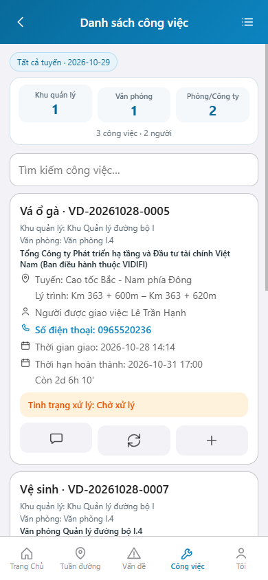
Hình. Công việc.
Mở tab Công việc. Tiêu đề Danh sách công việc. Tình trạng: Chờ xử lý, Đang xử lý, Đã hoàn thành.
Mở Chi tiết công việc. Nhấn Trao đổi, Nhật ký xử lý hoặc Cập nhật trạng thái.
Trên tiến độ, nhấn Ghim vị trí hiện tại trước khi cập nhật. Nhấn Hoàn thành khi xong.
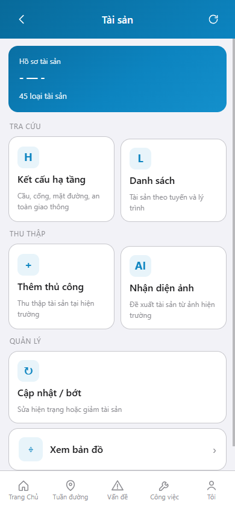
Hình. Tài sản.
Tài sản
Mục đích: xem và thu thập kết cấu trên tuyến.
Cách thực hiện:
Ô Tài sản mở hub Tài sản.
Danh sách tài sản để tìm. Kết cấu hạ tầng để xem loại.
Thêm tài sản thủ công khi ghi mới. Bớt hoặc sửa tài sản khi điều chỉnh.
Nhận diện hiện trường chụp và nhận diện. Bản đồ tài sản xem vị trí trên bản đồ.
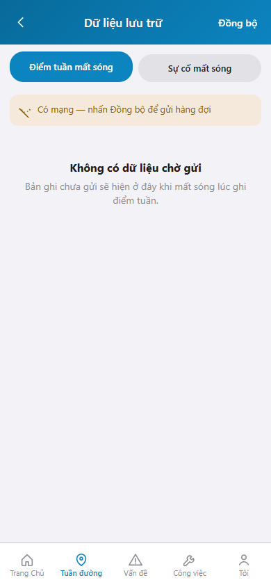
Hình. Dữ liệu lưu trữ.
Lưu trữ
Mục đích: gửi các bản ghi đã lưu khi mất sóng.
Cách thực hiện: mở Lưu trữ hoặc Dữ liệu lưu trữ. Có mạng thì dòng Có mạng. Nhấn Đồng bộ để gửi hàng đợi. Nhấn Đồng bộ.
Tôi và thông báo
Mục đích: xem hồ sơ, đổi view, đọc thông báo, đăng xuất.
Cách thực hiện:
Tab Tôi: Hồ sơ, Views, Thông báo, Đăng xuất.
Thông báo mở danh sách tin. Đăng xuất hỏi Đăng xuất?
Tuần kiểm
Cán bộ tuần kiểm mở đợt trên đoạn tuyến được giao. Đợt đang kiểm thì ghi điểm tuần. Trên Công việc, cập nhật trạng thái, hoàn thành hoặc trao đổi.
Hình. Tôi, chọn Views.
Chọn view
Mục đích: mở menu Tuần kiểm trong phiên.
Quản lý có nhiều hơn 1 view thì có lựa chọn này. Tài khoản chỉ có 1 view không cần chọn view.
Mở Tôi, nhấn Views, chọn Tuần kiểm.
Phần mềm vào hub Tuần kiểm.
Hub tuần kiểm
Mục đích: ghi điểm khi đợt đang kiểm, hoặc mở đợt khi chưa chọn đợt.
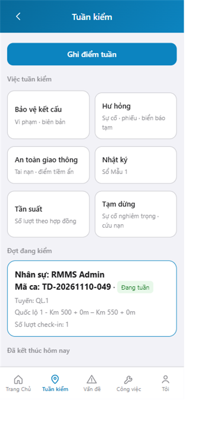
Hình. Hub tuần kiểm, đợt đang kiểm.
Mở tab Tuần kiểm.
Đã có đợt đang kiểm: nút chính là Ghi điểm tuần. Phiếu mở ra cũng tên Ghi điểm tuần.
Chưa chọn đợt: nút chính là Mở ca và mở màn Mở đợt. Nhiều đợt mà chưa chọn: Chọn một đợt bên dưới.
Phần Việc tuần kiểm: Bảo vệ kết cấu, Hư hỏng, An toàn giao thông, Nhật ký, Tần suất, Tạm dừng.
Phần Đợt đang kiểm ghi nhân sự, mã ca, trạng thái Đang tuần, tuyến và số lượt check-in.
Phần Đã kết thúc hôm nay. Chưa có ca kết thúc: Chưa có ca kết thúc trong ngày.
Chưa có đợt: dòng Chưa có ca. Gợi ý: Mở ca tuần kiểm trên tuyến.
Mở đợt
Mục đích: mở một đợt kiểm trên đoạn tuyến.
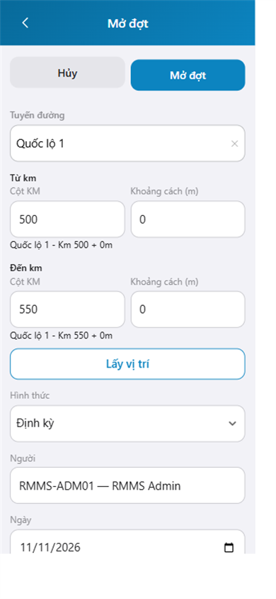
Hình. Mở đợt.
Chọn Tuyến đường. Ở từ km và đến km, nhập Cột KM và Khoảng cách (m).
Nhấn Lấy vị trí khi cần lấy vị trí hiện tại. Đang lấy thì nút ghi Đang lấy vị trí…
Chọn Hình thức: Định kỳ hoặc Đột xuất. Đột xuất thì nhập Lý do đột xuất.
Người hiện sẵn. Kiểm tra Ngày. Ô Loại / trạng thái ghi sẵn Tuần kiểm · Đang tuần.
Nhấn Mở đợt. Đang gửi thì nút ghi Đang lưu… Nhấn Hủy nếu chưa mở.
Thiếu tuyến: Chọn tuyến đường trước khi mở đợt. Thiếu lý do: Nhập lý do đột xuất. Thiếu cột KM: Nhập cột KM từ và đến trước khi mở đợt.
Mở xong: Đã mở đợt tuần kiểm. Đã có đợt trên cùng tuyến: Đã có đợt đang kiểm — chuyển tới đợt hiện tại.
Công việc
Mục đích: xem việc được giao và mở trao đổi.
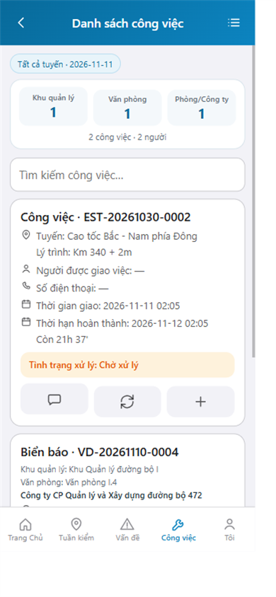
Hình. Danh sách công việc.
Mở tab Công việc. Tiêu đề màn là Danh sách công việc.
Mỗi thẻ ghi mã công việc, tuyến, lý trình, người được giao, thời hạn và Tình trạng xử lý: Chờ xử lý, Đang xử lý hoặc Đã hoàn thành.
Nhấn Trao đổi để mở Trao đổi công việc.
Nhấn Cập nhật trạng thái để mở màn cùng tên.
Cập nhật trạng thái
Mục đích: ghi tiến độ hoặc hoàn thành công việc.
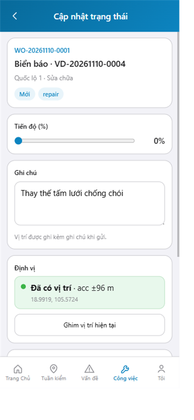
Hình. Cập nhật trạng thái.
Kéo Tiến độ (%) từ 0 đến 100. Nhập Ghi chú.
Nhấn Ghim vị trí hiện tại. Đã có vị trí thì dòng ghi Đã có vị trí.
Thêm Ảnh hiện trường khi cần.
Nhấn Cập nhật tiến độ hoặc Hoàn thành.
Chưa ghim vị trí: Cần vị trí định vị trước khi Cập nhật / Hoàn thành. Bấm Ghim vị trí hiện tại. Tiến độ ngoài 0 đến 100: Tiến độ phải từ 0 đến 100.
Cập nhật xong: Đã cập nhật tiến độ. Hoàn thành xong: Đã hoàn thành công việc.
Tôi và thông báo
Cách thực hiện: tab Tôi để đổi Views, mở Thông báo hoặc Đăng xuất.
Quản lý
View Quản lý giao việc, lập nghiệm thu, xem giám sát và ký sổ. Tab dưới: Trang Chủ, Nghiệm thu, Vấn đề, Công việc, Tôi.
Hình. Tôi, chọn Views.
Chọn view
Mục đích: mở menu Quản lý trong phiên.
Quản lý có nhiều hơn 1 view thì có lựa chọn này. Tài khoản chỉ có 1 view không cần chọn view.
Mở Tôi, nhấn Views, chọn Quản lý.
Phần mềm về Trang Chủ.
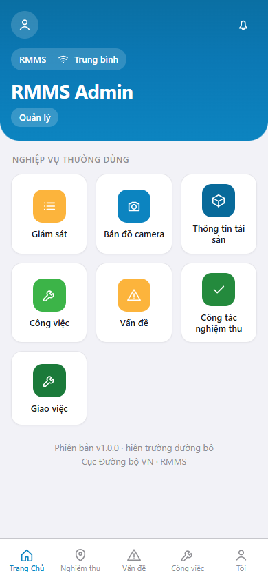
Hình. Trang chủ quản lý.
Trang chủ
Mục đích: vào giám sát, nghiệm thu và giao việc.
Cách thực hiện: các ô Giám sát, Bản đồ camera, Thông tin tài sản, Công tác nghiệm thu, Giao việc, Công việc, Vấn đề. Ô Giao việc mở mục Vấn đề.
Giao việc
Mục đích: giao đơn vị xử lý một sự cố hoặc một báo cáo ca.
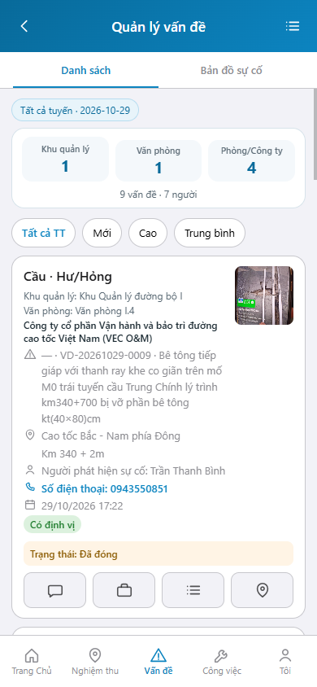
Hình. Vấn đề, nút Giao việc.
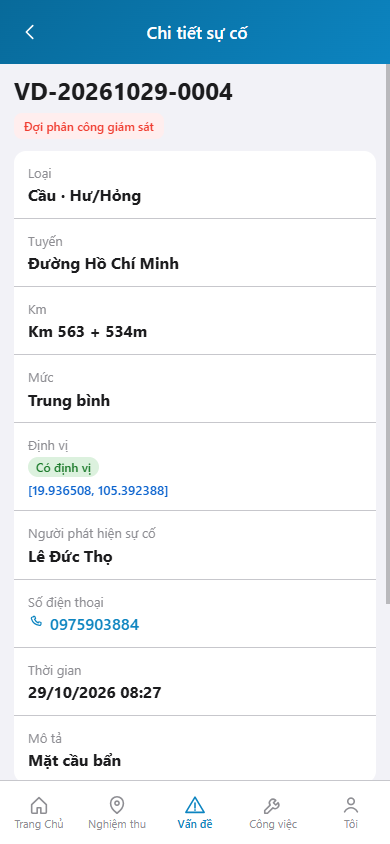
Hình. Chi tiết sự cố.
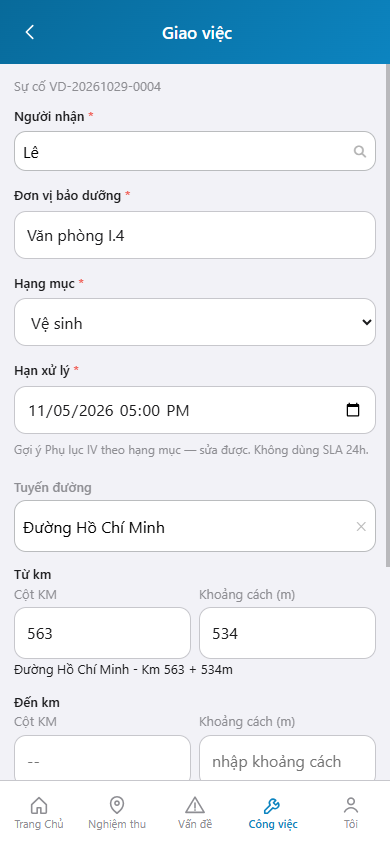
Hình. Giao việc.
Mở dòng đang Đợi phân công giám sát. Nhấn Giao việc trên dòng, hoặc Giao việc xử lý trong chi tiết.
Màn Giao việc. Chọn Người nhận, nhập Đơn vị bảo dưỡng, chọn Hạng mục.
Chọn Hạn xử lý. Ô ghi gợi ý Phụ lục IV theo hạng mục và cho sửa. Nhập Ghi chú nếu cần.
Nhấn Giao. Thông báo Đã giao việc. Nhấn Hủy nếu chưa giao.
Thiếu ô: Chọn người nhận., Nhập đơn vị bảo dưỡng., Chọn hạng mục., Chọn hạn xử lý.
Hình. Chi tiết sự cố.
Vấn đề
Mục đích: xem mọi sự cố để giao, không tạo hộ và không đóng hộ.
Cách thực hiện: tab Vấn đề, tiêu đề Quản lý vấn đề. Mở Chi tiết sự cố để đọc loại, tuyến, km, mức, định vị, ảnh. Nhấn Trao đổi khi cần nhắn.
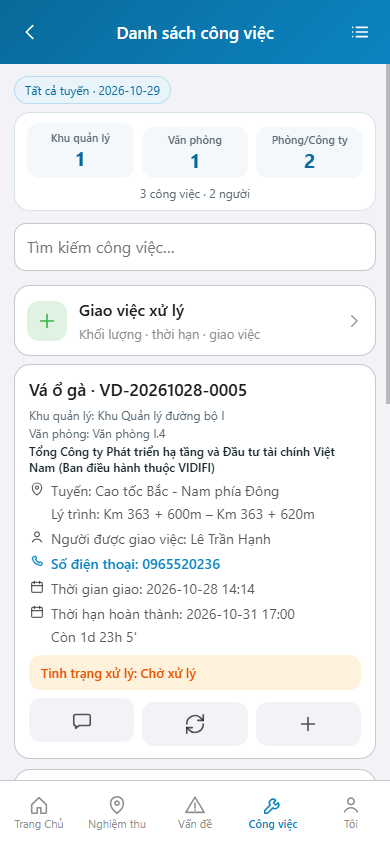
Hình. Danh sách công việc.
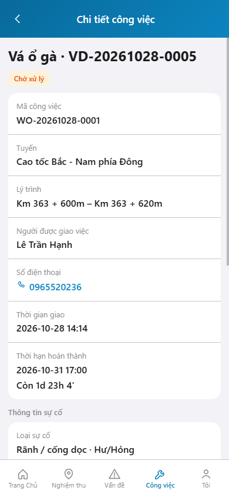
Hình. Chi tiết công việc.
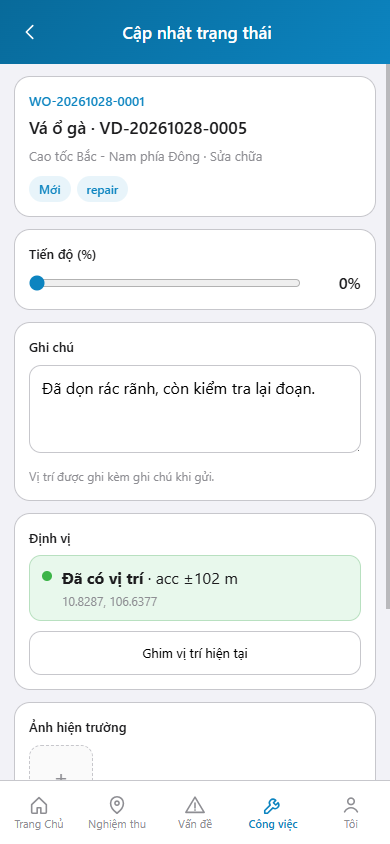
Hình. Cập nhật trạng thái.
Công việc
Mục đích: theo dõi việc đã giao.
Cách thực hiện: tab Công việc. Xem Người được giao việc, Thời hạn hoàn thành, tình trạng Chờ xử lý, Đang xử lý, Đã hoàn thành. Người được giao mới nhấn Cập nhật trạng thái và Hoàn thành.
Nghiệm thu
Mục đích: lập phiếu hiện trường và ký nghiệm thu.
Hình. Danh sách nghiệm thu.
Mở tab Nghiệm thu hoặc ô Công tác nghiệm thu.
Ô tìm Mã · tuyến · hiện trường. Nhấn Tìm kiếm.
Nhấn Tạo nghiệm thu.
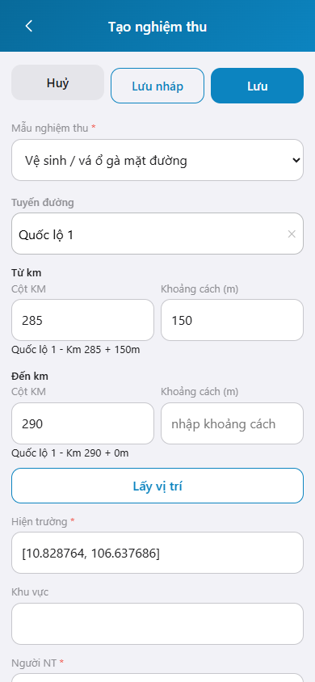
Hình. Tạo phiếu.
Chọn Mẫu nghiệm thu, Tuyến, Người NT, Thời điểm NT.
Nhập Hiện trường hoặc lấy định vị. Nhập km từ, km đến.
Với từng hạng mục chọn Đạt, Không đạt hoặc Không áp dụng.
Chọn kết quả phiếu: Đạt, Không đạt hoặc Khấu trừ.
Nhấn Chụp cho Ảnh hiện trường. Nhấn Lưu hoặc Lưu nháp. Nhấn Huỷ thì hộp Rời trang?
Ký tay trong khung. Dòng Ký tay vào khung, rồi bấm Nghiệm thu. Nhấn Nghiệm thu. Trạng thái Đã ký.
Mười mẫu trên phiếu
Mẫu
Hạng mục
01
Cắt cỏ lề / cắt cây
02
Vệ sinh / vá ổ gà mặt đường
03
Nạo vét rãnh
04
Sơn bổ sung báo hiệu
05
Khơi thông cống / rãnh
06
Sửa chữa lề đường
07
Hót sụt
08
Bảo dưỡng báo hiệu đường bộ
09
Hạng mục công trình khác
10
Bảo dưỡng thiết bị
Phiếu điện thoại giữ Đạt, Không đạt, Khấu trừ. Số tiền khấu trừ lấy theo Thông tư 41/2024 và hợp đồng khi họp kỳ. Phần mềm không tự tính số tiền.
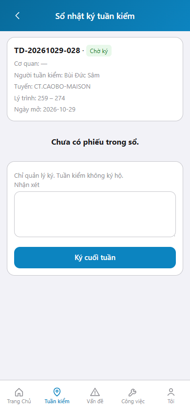
Hình. Sổ, nút Ký cuối tuần.
Ký sổ cuối tuần
Mục đích: lãnh đạo ký sổ nhật ký tuần kiểm.
Cách thực hiện:
Mở sổ của đợt. Đọc dòng phiếu và dòng Khớp hoặc Lệch.
Nhập Nhận xét. Nhấn Ký cuối tuần.
Trạng thái chuyển Đã ký.
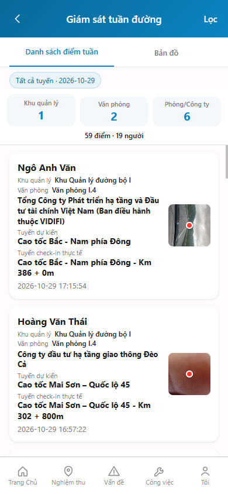
Hình. Giám sát tuần đường.
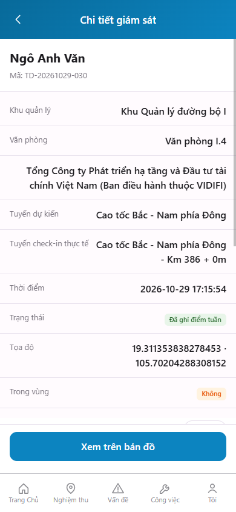
Hình. Chi tiết một điểm tuần.
Giám sát tuần đường
Mục đích: xem ca và điểm tuần của nhân viên.
Cách thực hiện: ô Giám sát mở Giám sát tuần đường. Chọn một ca để xem điểm, lý trình và ảnh. Màn chỉ đọc.
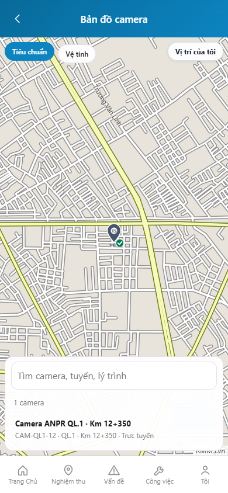
Hình. Bản đồ camera.
Bản đồ camera
Mục đích: xem camera giám sát trên bản đồ.
Cách thực hiện: ô Bản đồ camera. Chọn một điểm camera để xem hình.
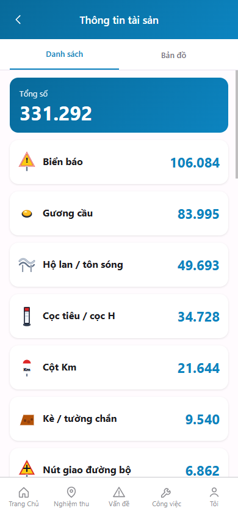
Hình. Thông tin tài sản.
Thông tin tài sản
Mục đích: xem tài sản phục vụ giám sát.
Cách thực hiện: ô Thông tin tài sản. Chọn tuyến hoặc loại để xem danh sách và vị trí.
Tôi và thông báo
Cách thực hiện: tab Tôi để đổi Views, mở Thông báo hoặc Đăng xuất.